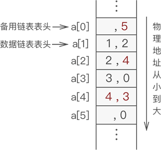
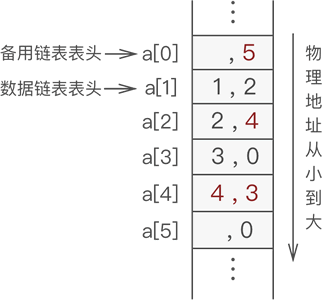

静态链表基本操作（C语言详解）
上节，我们初步创建了一个静态链表，本节学习有关静态链表的一些基本操作，包括对表中数据元素的添加、删除、查找和更改。
本节是建立在已能成功创建静态链表的基础上，因此我们继续使用上节中已建立好的静态链表学习本节内容，建立好的静态链表如图 1 所示：

图 1 建立好的静态链表
经过以上几步操作，数据元素 4 就成功地添加到了静态链表中，此时新的静态链表如图 2 所示：

图 2 添加元素 4 的静态链表
由此，我们通过尝试编写 C 语言程序实现以上操作。读者可参考一下程序：
静态链表查找指定数据元素的 C 语言实现代码如下：
实现此操作的 C 语言代码如下：
本节是建立在已能成功创建静态链表的基础上，因此我们继续使用上节中已建立好的静态链表学习本节内容，建立好的静态链表如图 1 所示：
图 1 建立好的静态链表
静态链表添加元素
例如，在图 1 的基础，将元素 4 添加到静态链表中的第 3 个位置上，实现过程如下：- 从备用链表中摘除一个节点，用于存储元素 4；
- 找到表中第 2 个节点（添加位置的前一个节点，这里是数据元素 2），将元素 2 的游标赋值给新元素 4；
- 将元素 4 所在数组中的下标赋值给元素 2 的游标；
经过以上几步操作，数据元素 4 就成功地添加到了静态链表中，此时新的静态链表如图 2 所示：

图 2 添加元素 4 的静态链表
由此，我们通过尝试编写 C 语言程序实现以上操作。读者可参考一下程序：
//向链表中插入数据，body表示链表的头结点在数组中的位置，add表示插入元素的位置，a表示要插入的数据
void insertArr(component * array,int body,int add,char a){
int tempBody=body;//tempBody做遍历结构体数组使用
//找到要插入位置的上一个结点在数组中的位置
for (int i=1; i<add; i++) {
tempBody=array[tempBody].cur;
}
int insert=mallocArr(array);//申请空间，准备插入
array[insert].data=a;
array[insert].cur=array[tempBody].cur;//新插入结点的游标等于其直接前驱结点的游标
array[tempBody].cur=insert;//直接前驱结点的游标等于新插入结点所在数组中的下标
}
静态链表删除元素
静态链表中删除指定元素，只需实现以下 2 步操作：- 将存有目标元素的节点从数据链表中摘除；
- 将摘除节点添加到备用链表，以便下次再用；
提示：若问题中涉及大量删除元素的操作，建议读者在建立静态链表之初创建一个带有头节点的静态链表，方便实现删除链表中第一个数据元素的操作。
实现该操作的 C 语言代码为：
//备用链表回收空间的函数，其中array为存储数据的数组，k表示未使用节点所在数组的下标
void freeArr(component * array,int k){
array[k].cur=array[0].cur;
array[0].cur=k;
}
//删除结点函数，a 表示被删除结点中数据域存放的数据
void deletArr(component * array,int body,char a){
int tempBody=body;
//找到被删除结点的位置
while (array[tempBody].data!=a) {
tempBody=array[tempBody].cur;
//当tempBody为0时，表示链表遍历结束，说明链表中没有存储该数据的结点
if (tempBody==0) {
printf("链表中没有此数据");
return;
}
}
//运行到此，证明有该结点
int del=tempBody;
tempBody=body;
//找到该结点的上一个结点，做删除操作
while (array[tempBody].cur!=del) {
tempBody=array[tempBody].cur;
}
//将被删除结点的游标直接给被删除结点的上一个结点
array[tempBody].cur=array[del].cur;
//回收被摘除节点的空间
freeArr(array, del);
}
静态链表查找元素
静态链表查找指定元素，由于我们只知道静态链表第一个元素所在数组中的位置，因此只能通过逐个遍历静态链表的方式，查找存有指定数据元素的节点。静态链表查找指定数据元素的 C 语言实现代码如下：
//在以body作为头结点的链表中查找数据域为elem的结点在数组中的位置
int selectElem(component * array,int body,char elem){
int tempBody=body;
//当游标值为0时，表示链表结束
while (array[tempBody].cur!=0) {
if (array[tempBody].data==elem) {
return tempBody;
}
tempBody=array[tempBody].cur;
}
return -1;//返回-1，表示在链表中没有找到该元素
}
静态链表中更改数据
更改静态链表中的数据，只需找到目标元素所在的节点，直接更改节点中的数据域即可。实现此操作的 C 语言代码如下：
//在以body作为头结点的链表中将数据域为oldElem的结点，数据域改为newElem
void amendElem(component * array,int body,char oldElem,char newElem){
int add=selectElem(array, body, oldElem);
if (add==-1) {
printf("无更改元素");
return;
}
array[add].data=newElem;
}
总结
这里给出以上对静态链表做 "增删查改" 操作的完整实现代码：
#include <stdio.h>
#define maxSize 7
typedef struct {
char data;
int cur;
}component;
//将结构体数组中所有分量链接到备用链表中
void reserveArr(component *array);
//初始化静态链表
int initArr(component *array);
//向链表中插入数据，body表示链表的头结点在数组中的位置，add表示插入元素的位置，a表示要插入的数据
void insertArr(component * array,int body,int add,char a);
//删除链表中含有字符a的结点
void deletArr(component * array,int body,char a);
//查找存储有字符elem的结点在数组的位置
int selectElem(component * array,int body,char elem);
//将链表中的字符oldElem改为newElem
void amendElem(component * array,int body,char oldElem,char newElem);
//输出函数
void displayArr(component * array,int body);
//从备用链表中摘除空闲节点的实现函数
int mallocArr(component * array);
//将摘除下来的节点链接到备用链表上
void freeArr(component * array,int k);
int main() {
component array[maxSize];
int body=initArr(array);
printf("静态链表为：\n");
displayArr(array, body);
printf("在第3的位置上插入结点‘e’:\n");
insertArr(array, body, 3,'e');
displayArr(array, body);
printf("删除数据域为‘a’的结点:\n");
deletArr(array, body, 'a');
displayArr(array, body);
printf("查找数据域为‘e’的结点的位置:\n");
int selectAdd=selectElem(array,body ,'e');
printf("%d\n",selectAdd);
printf("将结点数据域为‘e’改为‘h’:\n");
amendElem(array, body, 'e', 'h');
displayArr(array, body);
return 0;
}
//创建备用链表
void reserveArr(component *array){
for (int i=0; i<maxSize; i++) {
array[i].cur=i+1;//将每个数组分量链接到一起
array[i].data=' ';
}
array[maxSize-1].cur=0;//链表最后一个结点的游标值为0
}
//初始化静态链表
int initArr(component *array){
reserveArr(array);
int body=mallocArr(array);
//声明一个变量，把它当指针使，指向链表的最后的一个结点，因为链表为空，所以和头结点重合
int tempBody=body;
for (int i=1; i<5; i++) {
int j=mallocArr(array);//从备用链表中拿出空闲的分量
array[tempBody].cur=j;//将申请的空线分量链接在链表的最后一个结点后面
array[j].data='a'+i-1;//给新申请的分量的数据域初始化
tempBody=j;//将指向链表最后一个结点的指针后移
}
array[tempBody].cur=0;//新的链表最后一个结点的指针设置为0
return body;
}
void insertArr(component * array,int body,int add,char a){
int tempBody=body;
for (int i=1; i<add; i++) {
tempBody=array[tempBody].cur;
}
int insert=mallocArr(array);
array[insert].cur=array[tempBody].cur;
array[insert].data=a;
array[tempBody].cur=insert;
}
void deletArr(component * array,int body,char a){
int tempBody=body;
//找到被删除结点的位置
while (array[tempBody].data!=a) {
tempBody=array[tempBody].cur;
//当tempBody为0时，表示链表遍历结束，说明链表中没有存储该数据的结点
if (tempBody==0) {
printf("链表中没有此数据");
return;
}
}
//运行到此，证明有该结点
int del=tempBody;
tempBody=body;
//找到该结点的上一个结点，做删除操作
while (array[tempBody].cur!=del) {
tempBody=array[tempBody].cur;
}
//将被删除结点的游标直接给被删除结点的上一个结点
array[tempBody].cur=array[del].cur;
freeArr(array, del);
}
int selectElem(component * array,int body,char elem){
int tempBody=body;
//当游标值为0时，表示链表结束
while (array[tempBody].cur!=0) {
if (array[tempBody].data==elem) {
return tempBody;
}
tempBody=array[tempBody].cur;
}
return -1;//返回-1，表示在链表中没有找到该元素
}
void amendElem(component * array,int body,char oldElem,char newElem){
int add=selectElem(array, body, oldElem);
if (add==-1) {
printf("无更改元素");
return;
}
array[add].data=newElem;
}
void displayArr(component * array,int body){
int tempBody=body;//tempBody准备做遍历使用
while (array[tempBody].cur) {
printf("%c,%d ",array[tempBody].data,array[tempBody].cur);
tempBody=array[tempBody].cur;
}
printf("%c,%d\n",array[tempBody].data,array[tempBody].cur);
}
//提取分配空间
int mallocArr(component * array){
//若备用链表非空，则返回分配的结点下标，否则返回0（当分配最后一个结点时，该结点的游标值为0）
int i=array[0].cur;
if (array[0].cur) {
array[0].cur=array[i].cur;
}
return i;
}
//将摘除下来的节点链接到备用链表上
void freeArr(component * array,int k){
array[k].cur=array[0].cur;
array[0].cur=k;
}
程序运行结果为：
静态链表为：
,2 a,3 b,4 c,5 d,0
在第3的位置上插入结点‘e’:
,2 a,3 b,6 e,4 c,5 d,0
删除数据域为‘a’的结点:
,3 b,6 e,4 c,5 d,0
查找数据域为‘e’的结点的位置:
6
将结点数据域为‘e’改为‘h’:
,3 b,6 h,4 c,5 d,0
关注公众号「站长严长生」，在手机上阅读所有教程，随时随地都能学习。内含一款搜索神器，免费下载全网书籍和视频。

微信扫码关注公众号